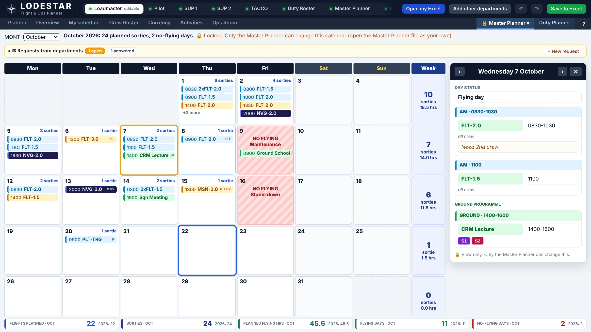
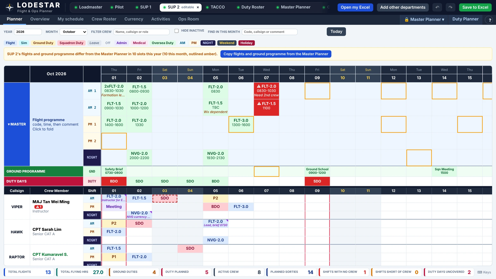
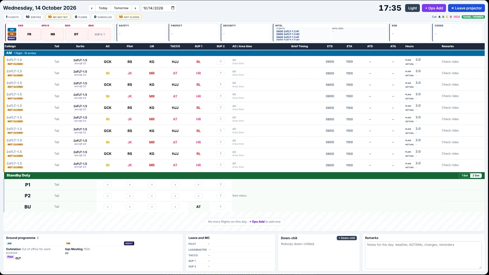
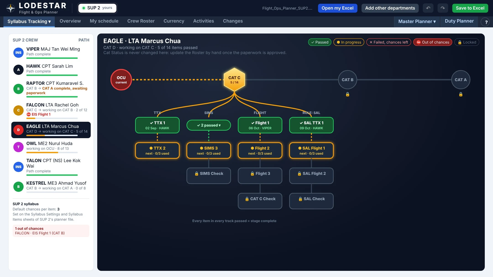
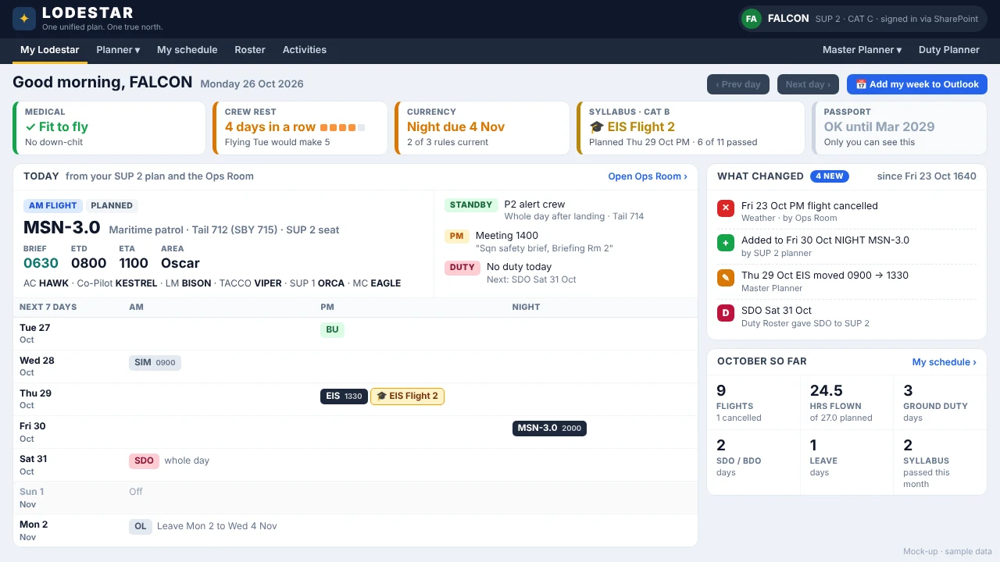

One unified plan.One true north.
Flying and duty crew planning for the whole squadron
ME2 Brandon Ng · 121 SQN
The problem
How the flying programme is built today
01
Oracle runs on heavy macros
Macros slow it down to open and to update.
02
Five Excel files, five styles
Data from each department is planted into Oracle by hand.
03
Department files built years ago
Many of their macros no longer work.
04
Flights retyped in every department
Master Planner (MOP) data is transferred by hand into each planning Excel.
The result: double work, missed changes, and a programme that falls out of step.
LODESTAR
121 SQN · FLIGHT & OPS PLANNER
One unified plan. One true north.
Why the name
The star navigators steer by
lodestar (n.): a star that guides navigation course, especially the North Star.
A fixed point
The North Star holds still while the sky turns. The Master Planner is the fixed reference every plan is checked against.
Every department steers by it
Pilot, TACCO, Loadmaster, SUP 1 and SUP 2 plan from the same source, so the squadron keeps one course.
Made for navigators
Navigator steers by the stars. Our compass rose points gold to north.
The solution
How LODESTAR solves each problem
Oracle runs on heavy macros
Slow to open and slow to update.
No macros at all
A light dashboard reads the files directly, fast in Edge.
Five Excel files, five different styles
Data is planted into Oracle by hand.
One template for every department
Same layout and codes, so the Ops Room board fills itself.
Department files built years ago
Many of their macros no longer work.
Rebuilt fresh, macro-free
Clean Excel files that open on SharePoint and still work alone.
Flights retyped in every department
Master Planner data is transferred by hand.
Flights copied in one click
Departments pull them straight from the Master Planner.
We already have a system. Why this?
Not reinventing the wheel. Redesigning it so we run better.
What we keep
- The same flying programme and Ops Room routine
- Excel, which every department already knows
- The Master Planner as the source of flights
- Each department owns its own plan
- The SharePoint we already use
What runs better
- Flights entered once, not re-typed in every file
- Department changes reach the Ops Room on save
- Warnings before a crewing mistake, not after
- One template, no broken macros to nurse
- Instant updates: everyone sees the latest plan
Same people, same process, better tools. Innovation works best when it is applied to old processes.
How it works
The dashboard is the hub that connects everything
Master Planner
Every flight, ground programme and SQN programme
Duty Roster
Which department has BDO and SDO each day
The dashboard
One dashboard, reads every file and saves back to your own.
Department files
Pilot, TACCO, Loadmaster, SUP 1, SUP 2. Each edits only its own.
Ops Room board
Crew seats, duties and movements, on the projector
Everything sits in one SharePoint folder
Flight data flow
How a flight travels from code to crew seat
01
Code set
Set once in the shared list: sorties, hours and which departments fly it.
02
Flight planned
Date, shift, time and code on the Master Planner. Departments see it read-only.
03
Copied to departments
Departments named on the code copy it in with one click. Any drift shows amber.
04
Crew put on
Each department crews its seats. Warnings flag MC, currency and crew rest.
05
On the board
The dashboard reads each department file and fills the Ops Room seats on save.
And back again: ad hoc flights added in the Ops Room land on the department plans, and flown or cancelled updates everyone’s totals and currency.
What it looks like
Three screens, one plan

Master Planner
Every flight is planned once, at the top.

Department planner
Each department plans its own crew, with live warnings.

Ops Room board
The day’s board builds itself from the plans.
Click any screen to enlarge
What it does
Plan, check and run the day in one place
01
Plan
- Flights planned once, copied in one click
- No-fly days and ground programme for all
- One shared flight code list
- BDO and SDO by department
02
Check
- Red or amber when a shift is short
- Currency, crew rest and MC warnings
- Down-chit holds until the up-chit
- Training syllabus, pass or fail per item
03
Run the day
- Seats auto filled from the plans
- Standby crew, tails and timings
- Ad hoc flights added on the day
- Flown or cancelled, logged
Quality of life
The small things that save time every day
01
Request to Master Planner
Send a request straight to the Master Planner, so no information is lost.
02
Find and Undo
Search for any name or flight, and take back a slip in one step.
03
Block of days
Leave or a detachment over a date range in one go, skipping weekends.
04
Notes on any cell
A comment on a crew cell shows in the plan and on the Ops Room board.
05
Totals counted for you
Sorties, ground duty, duties and leave each month, with no tallying by hand.
06
Help and projector mode
A help pop-up on every tab, and a full-screen board for the Ops Room.
Every department can also view the other plans side by side, read-only.
Ops Room board, redesigned
No longer built by hand: the board builds itself
Seats fill themselves
Every seat comes from the department plans. No re-typing, no phoning round.
The whole day, one screen
Seats, tails and times per flight, with SXO, OPS O, SDO and BDO per shift.
Standby and ad hoc
P1, P2 and BU per shift. Flights added here go onto department plans.
Closes the loop
Flown or cancelled logged with a reason; down-chits cleared in one click.
Syllabus tracker
Every trainee’s path from OCU to CAT A

One path per trainee
Sims, flights and role items side by side, from OCU to CAT A.
Linked to the plan
Each item is tied to a flight in the department planner.
Pass or fail, by hand
The instructor marks it after the sortie.
Category stays in control
Cat Status never changes by itself; the Roster updates once paperwork is approved.
My LODESTAR
A dashboard for every member

Your day at a glance
Today’s flight, seat, brief time and crew, plus standby and duties.
Your status, up front
Medical, crew rest, currency and syllabus in green, amber or red.
What changed
Cancellations, new flights and time changes, and who made them.
Your week and month
The next 7 days, monthly totals, and one click to add the week to Outlook.
Currency sync
Currency is read from ATOM, never kept twice
1
ATOM holds the record
Currency records stay where they are entered today, in ATOM.
2
LODESTAR reads it
LODESTAR looks up each member’s currency in ATOM.
3
One answer everywhere
The plans show the same data as ATOM, with a warning if someone is out of currency.
Before and after
What changes for the squadron
| Measure | Today | With LODESTAR |
|---|---|---|
| Time to build the day’s Ops Room programme | 30 min to 1 hr, depending on the number of flights | Built as each department saves |
| Where each flight is typed | Master Planner, then again in each department file | Once, in the Master Planner |
| How a department change reaches the Ops Room | Re-typed by hand, and the Ops Room told | On the board as soon as the department saves |
| Missed or late changes, last month | Several, not logged | Tracked after go-live |
| Cost of new software | None | None: our own SharePoint and Excel |
What the squadron gains
Safer crewing, less re-typing, and a faster process
Less double entry
Flights entered once, copied to every plan in one click
Gaps show up early
A short-crewed flight turns red or amber days ahead
Safer crewing
MC, currency and crew rest warnings before anyone is put on a flight
Faster morning process
The Ops Room daily board is always ready on the projector
One squadron, one plan
Every department sees the same flights, duties and crew in a single dashboard
Zero cost
Our own SharePoint and Excel. Nothing to buy or install. Excel still works alone.
Safe and supported
It stays inside the squadron, and it doesn’t rest on one person
Data and security
- Stays on the squadron’s intranet SharePoint
- SharePoint permissions decide who edits what
- Each department edits only its own file
Support and ownership
- One template for every department
- Full PDF guide will be included
- Help pop-up on every tab
- A second maintainer, to be named and trained
If the dashboard is ever down, every department’s Excel file still works on its own.
The way ahead
From dashboard build to Q1 2027
Now
Build
The dashboard is still being built.
In progress
Step 1
Feedback
Collect feedback from stakeholders.
Next
Step 2
Beta test
Beta test the dashboard.
After feedback
Step 3
Target
Our target date for the next milestone.
Q1 2027
Questions
Q&A
One unified plan. One true north.
ME2 Brandon Ng · 121 SQN